textod (text to diagram) reads a small indented language of boxes, rows, columns and arrows and draws it as SVG. It is a single program with no dependencies, and the same input always gives the same picture.
import rounded
diagram hello style=rounded
row gap=70
box client "Client" light
box server "Server" blue
client -> server label="request"
server.bottom -> client.bottom elbow dash="6 4" label="response"
textod hello.dg
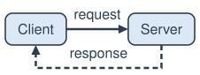
hello.svg, as written to the standard output.
textod hello.dg > hello.svg
Examples
Every figure on this page was drawn by textod from the text next to it. The sources are in the examples/ folder of the repository.
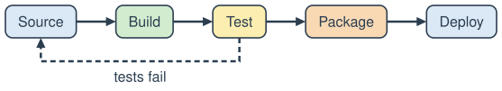
Figure 1. A build pipeline with a feedback path.
Flows and chains
A chain of -> joins neighbours. An elbow connector leaves one side of a box and enters the side of another, so a loop back is one line.
Rows and columns place their children, and a group draws a titled frame around a few of them. Connectors only name boxes by id.
import rounded
diagram architecture style=rounded
row gap=84 align=center
col gap=26
box web "Web app" light w=110
box mobile "Mobile app" light w=110
group backend "Backend" pad=18
col gap=26
box api "API" green w=110
box worker "Worker" green w=110
col gap=26
box cache "Cache" orange w=110
box db "Database" yellow w=110
web -> api label="HTTPS"
mobile -> api
api -> cache
api -> db label="SQL"
api -> worker dash="6 4" label="jobs"
worker -> db
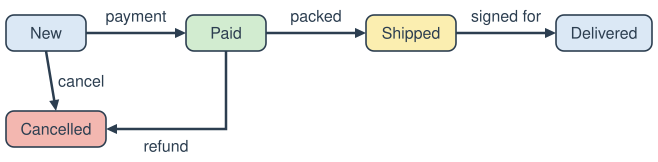
Figure 3. The states of an order.
State machines
Anchors choose where a connector touches a box (paid.bottom), and side=below moves its label to the other side of the line.
import rounded
diagram states style=rounded
col gap=60 align=start
row gap=100
box new "New" light w=80
box paid "Paid" green w=80
box shipped "Shipped" yellow w=90
box done "Delivered" blue w=96
box cancelled "Cancelled" red w=100
new -> paid label="payment"
paid -> shipped label="packed"
shipped -> done label="signed for"
new.bottom -> cancelled.top label="cancel"
paid.bottom -> cancelled.right elbow label="refund" side=below
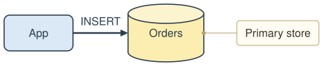
Figure 4. A custom shape and a callout.
Your own shapes
A shape is drawn from rectangles, ellipses, lines and paths whose numbers are expressions of its own width w and height h, so it resizes like any other box.
import rounded
diagram shapes style=rounded
row gap=80 align=center
box app "App" light w=100 h=52
shape db "Orders" w=110 h=84 fill=yellow
set ry=14
ellipse cx=w/2 cy=h-ry rx=w/2 ry=ry fill=self
rect x=0 y=ry w=w h=h-2*ry fill=self sw=0
line x1=0 y1=ry x2=0 y2=h-ry
line x1=w y1=ry x2=w y2=h-ry
ellipse cx=w/2 cy=ry rx=w/2 ry=ry fill=lid
app -> db label="INSERT"
callout db "Primary store" side=right
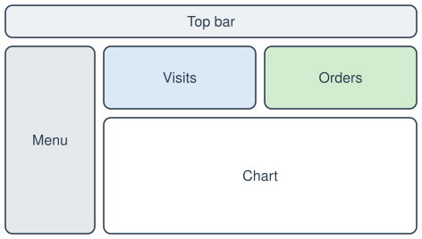
Figure 5. A dashboard wireframe.
Wireframes
With no connectors at all, rows and columns are a layout language. Sizes are exact when you give w and h, and flexible when you do not.
import rounded
diagram wireframe style=rounded
col gap=10
box top "Top bar" bar w=460 h=36
row gap=10
box nav "Menu" gray w=100 h=210
col gap=10
row gap=10
box k1 "Visits" light w=170 h=70
box k2 "Orders" green w=170 h=70
box chart "Chart" white w=350 h=130
Styles and themes
They are two separate settings, and you can combine them. A style sets the shape of things: corner radius, line width, padding, shadow. A theme sets colors. Both are plain files in the lib/ folder, so adding one means adding a file.
Styles
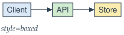
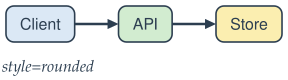
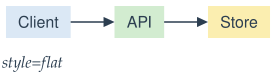
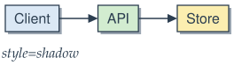
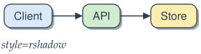
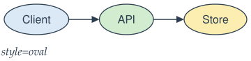
The six figures are the same diagram with a different style= on the diagram line. flat, shadow, rshadow and oval are inspired by FLTK's box types.
Themes
Eight light themes (GitHub Light, One Light, Gruvbox Light, Catppuccin Latte, Tomorrow, Ayu Light, Nord Light and Solarized Light) and three dark ones (Monokai, Solarized Dark and Zenburn), each drawn over its own background.
import rounded
diagram demo style=rounded theme=github-light caption="theme=github-light"
row gap=44
box a "Client" light
box b "API" primary
box c "Store" yellow
a -> b label="HTTP"
b -> c
Pick a theme per diagram with theme= or for a whole run with -T github-light. Themes can be chained, as in theme=github-light,gruvbox-light; the last one wins. Styles can be chained too (style=shadow,rounded: for each setting the last one wins).
What it is good for
textod suits diagrams that belong next to text and change with it.
READMEs and documentation
Keep the diagram as a small text file in the repository. Reviews and diffs show what changed in the picture as a few lines.
Course notes and books
Figures with captions and a consistent style, in a format that scales for print and screen.
Architecture and design docs
Boxes, groups and labelled connectors for systems, pipelines and state machines.
Wireframes and layouts
Rows, columns, grids and absolute positions are enough to sketch a screen or a page.
Generated diagrams
A program can write the text and let textod draw it. The input is a small, fixed language, described as the plain language, so it is a convenient target for other tools.
Builds and CI
It reads a file or standard input and writes standard output, so it fits in a Makefile rule, a shell loop or a pipeline.
What is in the box
Plain text in, SVG outIndentation gives the structure. There is nothing to learn beyond the elements and attributes in the reference.
Layout you controlrow, col, grid, layer, group and canvas place things; textod does not move them around on its own.
Connectors with anchorsArrows between ids, on a chosen side or at a percentage of it, straight, elbow or curved, with labels, dashes and arrowheads at either end.
Custom shapesDraw with rectangles, ellipses, lines, polygons and paths whose numbers are expressions of the size.
Captions and calloutsFigure captions are part of the picture, and a callout attaches a note to any element.
Styles and themes as filesAdd a .dg style or a .css theme to lib/; no recompiling.
Repeatable outputThe build disables floating-point contraction, so the same input gives identical SVG on ARM and x86.
Errors that say whereMessages give the file and line, and suggest the nearest name when an attribute or element is misspelled.
In your build
textod is a filter: with no file argument it reads standard input, and it writes the SVG to standard output unless you pass -o. It prints nothing when it works.
Render a folder of diagrams
One SVG next to each source file.
for f in docs/*.dg; do textod "$f" -o "${f%.dg}.svg"; done
Let make rebuild what changed
A pattern rule re-renders only the diagrams whose source is newer.
Build once, then render. This is a GitHub Actions job; adapt the paths to your repository.
- uses: actions/checkout@v4
- run: make
- run: for f in docs/*.dg; do build/textod "$f" -o "${f%.dg}.svg"; done
An SVG file can be shown in a web page with an ordinary <img> tag or Markdown image, which is how this page does it.
The language at a glance
The full description, with every attribute, is in docs/language.md.
Containers
rowcolgrid cols=Ngroup "Title"layercanvas
Leaves
boxtextspacershape
Inside a shape
rectellipselinepathpolylabelset
Annotations
callout
Size and space
whminwminhgappadalignflex
Painting
fillstrokeswdashradiusalpha
Text
sizecolorbolditalicmonorotate
Colors
Names such as light, green, yellow, red, or #rrggbb
Connectors name elements by id, optionally with an anchor, and take options:
# between ids
a -> b
a -- b # no arrowhead
a -> b -> c # a chain
# anchors and routing
a.bottom -> b.top elbow
a.bottom@25% -> b.top # 25% along the side
# options
a -> b label="Writes" side=right
a -> b both # arrowhead at both ends
a -> b dash="7 5" # dashed
Install and run
You need make and a C++17 compiler such as g++ or clang++. Nothing else.
git clone https://github.com/arce/textod.git
cd textod
make
make check
build/textod examples/hello.dg > hello.svg
make check renders every example and compares it with the SVG stored beside it. make install copies the program to /usr/local/bin and its styles and themes to /usr/local/share/textod; use PREFIX= to change the place.
INPUT
A .dg file. Without it, or with -, standard input is read.
-o OUTPUT
Write to this file instead of standard output. With several diagrams in one file, each goes to OUTPUT-ID.svg.
-L DIR
Extra folder with styles and themes. Repeatable.
-T THEME
Theme for diagrams that do not set theme=.
--libs
List the styles and themes that were found.
Questions
Does it place the boxes for me?
No. You place them with rows, columns, grids and groups, or with exact positions on a canvas. Tools that choose positions for you are convenient for graphs with many nodes; textod is for figures where the arrangement is part of the message.
Where do styles and themes come from?
From files. textod looks in the folder of the input file, in any -L folder, and in lib/ or ../lib beside the program, then in ../share/textod. A file of your own with the same name wins, so you can override a built-in look.
Can I use the SVG in Markdown, slides or print?
Yes. The output is a standalone SVG file. Browsers, Markdown renderers and most vector editors open it, and it stays sharp at any size.
What happens with macros, loops and data?
textod reads the plain language only. If a file uses something richer, it stops with a message saying so. A separate program can expand a richer language into the plain language and hand it to textod; the plain language document describes exactly what that output must look like.